Generated from a Jupyter notebook
This page is EQE/eqe_analysis.ipynb, rendered with its stored outputs.
Run it in Google Colab or
view the notebook on GitHub.
External Quantum Efficiency (EQE) of Solar Cells¶
A solar cell turns photons into current. How well it does that depends strongly on the wavelength of the light. Quantum efficiency measurements resolve the conversion process wavelength by wavelength, and are the standard way to find out where in a cell the losses happen.
This notebook builds the technique up from first principles:
| Section | Question answered |
|---|---|
| 1-2 | How deep does light of a given wavelength go? |
| 3 | Where do the incident photons end up? |
| 4 | Which generated carriers survive to be collected? |
| 5 | What is EQE, and what shapes its curve? |
| 6 | What is IQE, and why separate it from EQE? |
| 7 | What is spectral response, and why is it what we measure? |
| 8 | How do we get \(J_{sc}\) back out of an EQE curve? |
| 9 | What do EQE and IQE reveal about a real device? |
| 10-12 | How is the measurement actually performed and calibrated? |
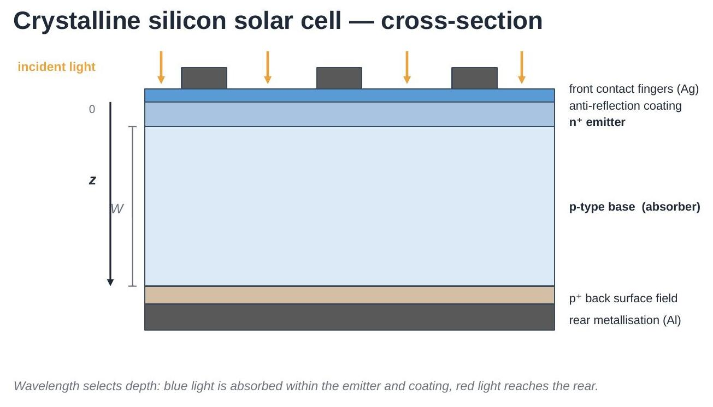
Equations are numbered (1), (2), ... and referred to by those numbers
throughout. All physics functions live in
eqe_helper.py, so the notebook itself stays short;
that module's docstrings point back to these equation numbers.
1. Photons and the useful wavelength range¶
The energy carried by one photon is
with \(h\) the Planck constant and \(c\) the speed of light. Short wavelength = high energy.
To generate an electron-hole pair, a photon needs at least the bandgap energy \(E_g\). For silicon \(E_g = 1.12\ \text{eV}\), which by (1) corresponds to \(\lambda \approx 1107\ \text{nm}\) — the absorption edge. Longer wavelengths pass through without generating carriers, so the useful range for a silicon cell is roughly 300-1200 nm.
import numpy as np
import matplotlib.pyplot as plt
import eqe_helper as eh
plt.rcParams.update({'font.size': 12})
wavelength_nm = np.linspace(280, 1250, 400)
E_photon = eh.photon_energy_eV(wavelength_nm) # Eq. (1)
plt.figure(figsize=(6, 3.8))
plt.plot(wavelength_nm, E_photon)
plt.axvline(eh.LAMBDA_G_NM, ls='--', color='k',
label=f'Si absorption edge, {eh.LAMBDA_G_NM:.0f} nm')
plt.axhline(eh.EG_SI_EV, ls=':', color='gray', label='$E_g$ = 1.12 eV')
plt.xlabel('Wavelength (nm)'); plt.ylabel('Photon energy (eV)')
plt.legend(); plt.tight_layout(); plt.show()
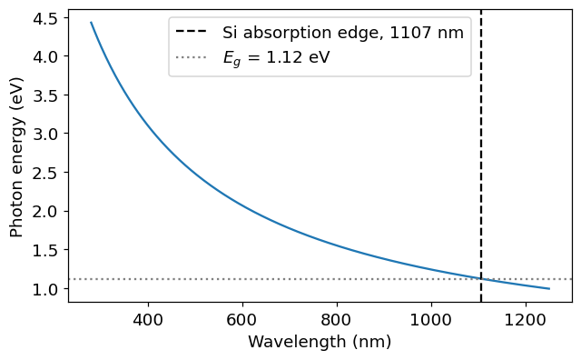
2. Absorption: how deep does the light go?¶
Inside the semiconductor, the photon flux decays exponentially with depth \(z\) (Lambert-Beer):
where \(\alpha(\lambda)\) is the absorption coefficient. The depth at which the flux has fallen to \(1/e \approx 37\%\) is the absorption length:
Silicon has an indirect bandgap: absorption near \(E_g\) needs phonon assistance, so \(\alpha\) decreases gradually over hundreds of nm rather than cutting off sharply. Across 300-1200 nm it varies by six orders of magnitude — the single most important fact behind the shape of an EQE curve.
wl = np.linspace(280, 1200, 400)
alpha = eh.alpha_silicon(wl) # 1/cm
L_alpha = eh.absorption_length_um(wl) # um, Eq. (3)
fig, axes = plt.subplots(1, 2, figsize=(11, 3.8))
axes[0].semilogy(wl, alpha)
axes[0].axvline(eh.LAMBDA_G_NM, ls='--', color='k', lw=1)
axes[0].set_xlabel('Wavelength (nm)')
axes[0].set_ylabel(r'$\alpha$ (cm$^{-1}$)')
axes[0].set_title('Absorption coefficient')
axes[1].semilogy(wl, L_alpha)
axes[1].axhline(160, ls='-.', color='C3', lw=1, label='cell thickness, 160 $\\mu$m')
axes[1].axvline(eh.LAMBDA_G_NM, ls='--', color='k', lw=1)
axes[1].set_xlabel('Wavelength (nm)')
axes[1].set_ylabel(r'$L_\alpha$ ($\mu$m)')
axes[1].set_title('Absorption length')
axes[1].legend(fontsize=9)
plt.tight_layout(); plt.show()
for wl_i in [300, 500, 800, 1000, 1100]:
print(f"{wl_i:5d} nm : L_alpha = {eh.absorption_length_um(wl_i):10.3f} um")
300 nm : L_alpha = 0.010 um
500 nm : L_alpha = 1.000 um
800 nm : L_alpha = 25.000 um
1000 nm : L_alpha = 294.118 um
1100 nm : L_alpha = 1666.667 um
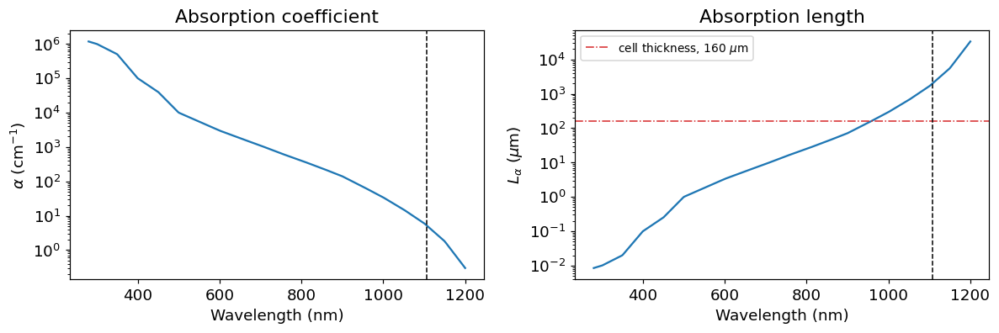
Read the right-hand plot against the cell thickness line:
- 300 nm: \(L_\alpha \approx 0.01\ \mu\text{m}\). All the light is absorbed in the first few tens of nm — inside the coating and emitter, right at the front surface.
- 800 nm: \(L_\alpha \approx 25\ \mu\text{m}\). Absorbed comfortably inside the base, well away from both surfaces. This is the cell's sweet spot.
- 1100 nm: \(L_\alpha \gg W\). Most light crosses the whole cell and reaches the rear, where it may escape or be reflected back.
So wavelength selects depth, and depth decides which loss mechanism the carriers will meet. That is what makes a wavelength-resolved measurement so diagnostic.
3. Where do the incident photons go?¶
Before any carrier physics, some photons never reach the absorber at all. Of the light arriving at the cell, a fraction \(R\) is reflected, and a fraction \(A_{\text{ext}}\) is parasitically absorbed in layers that generate no usable current (the anti-reflection coating, the metal fingers, the heavily doped emitter). What is left is transmitted into the absorber — the external transmission:
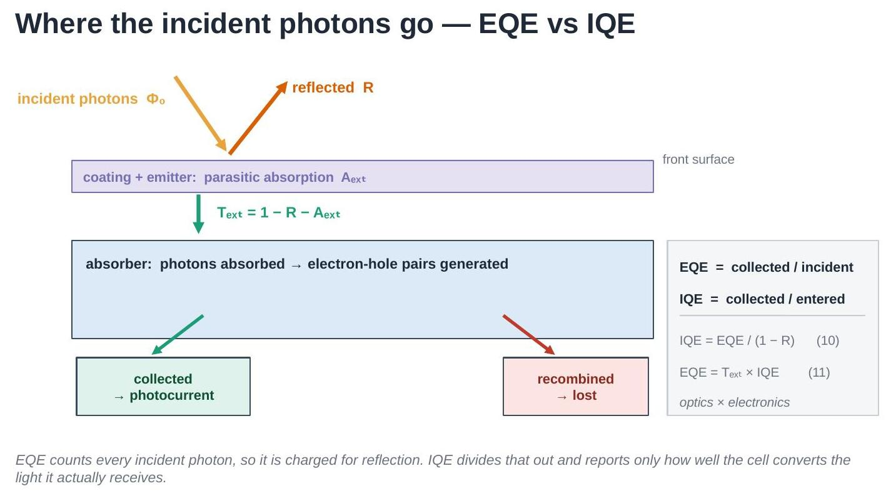
This split is the reason two different efficiencies are needed. One counts carriers per incident photon (EQE, Section 5); the other counts carriers per photon that got in (IQE, Section 6). Keeping them apart is what lets you tell an optical problem from an electrical one.
wl = np.linspace(300, 1200, 300)
R = eh.arc_reflectance(wl) # front-surface reflectance
T_ext = eh.external_transmission(wl) # Eq. (4)
A_ext = 1 - R - T_ext # parasitic absorption
plt.figure(figsize=(6.5, 4))
plt.stackplot(wl, R, A_ext, T_ext,
labels=['$R$ (reflected)',
'$A_{ext}$ (parasitically absorbed)',
'$T_{ext}$ (into the absorber)'],
colors=['#d95f02', '#7570b3', '#1b9e77'], alpha=0.85)
plt.xlabel('Wavelength (nm)'); plt.ylabel('Fraction of incident photons')
plt.ylim(0, 1); plt.xlim(wl.min(), wl.max())
plt.legend(loc='center', fontsize=9, framealpha=0.95)
plt.title('Photon accounting at the front surface')
plt.tight_layout(); plt.show()
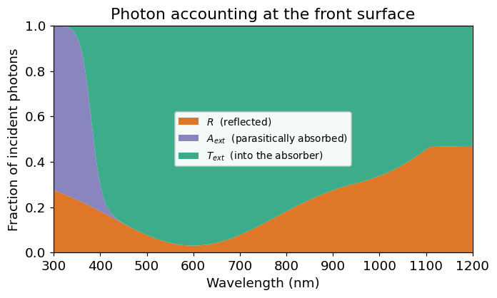
The anti-reflection coating works best near its design wavelength (~600 nm here), where almost everything gets in. In the UV, parasitic absorption dominates. At long wavelengths reflection rises again, because weakly absorbed light reaches the rear surface and can leave the cell.
4. Generation and collection¶
Every absorbed photon generates one electron-hole pair. The generation rate per unit depth follows by differentiating (2):
Generating a carrier is not enough — it must reach a contact before it recombines. A minority carrier with diffusion constant \(D\) and lifetime \(\tau\) travels, on average, a diffusion length
before recombining. The probability that a carrier generated at depth \(z\) is actually collected is the collection efficiency:
where \(W\) is the base thickness and \(S\) the rear surface recombination velocity. Two knobs matter: a longer \(L\) (better bulk material) and a smaller \(S\) (better rear passivation) both raise \(\eta_c\) deep in the cell.
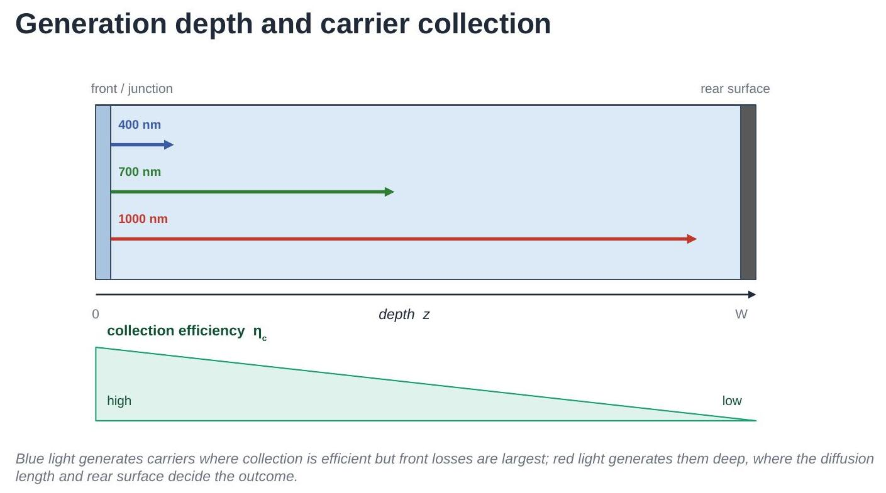
z = np.linspace(0, 160, 400) # depth, um
W = 160.0 # base thickness, um
fig, axes = plt.subplots(1, 2, figsize=(11, 3.8))
# Generation profiles, Eq. (5) - log scale, decay lengths span decades
for wl_i, style in zip([400, 700, 1000], ['-', '--', ':']):
axes[0].semilogy(z, eh.generation_profile(z, wl_i), style, label=f'{wl_i} nm')
axes[0].set_xlabel(r'Depth, $z$ ($\mu$m)')
axes[0].set_ylabel(r'$g(z)$ (normalised, $\mu$m$^{-1}$)')
axes[0].set_title('Where carriers are generated, Eq. (5)')
axes[0].set_ylim(1e-6, 20); axes[0].legend(fontsize=9)
# Collection efficiency, Eq. (7), for different diffusion lengths
for L_i in [0.5 * W, 1.0 * W, 4.0 * W]:
axes[1].plot(z, eh.collection_efficiency(z, L_um=L_i, W_um=W, S_cm_s=100.0),
label=f'L = {L_i / W:.1f} W')
axes[1].set_xlabel(r'Depth, $z$ ($\mu$m)')
axes[1].set_ylabel(r'$\eta_c(z)$')
axes[1].set_title('Whether they survive, Eq. (7)')
axes[1].set_ylim(0, 1.05); axes[1].legend(fontsize=9)
plt.tight_layout(); plt.show()
print(f"L = sqrt(D*tau) for D=27 cm^2/s, tau=100 us : "
f"{eh.diffusion_length_um(27.0, 100.0):.0f} um [Eq. (6)]")
L = sqrt(D*tau) for D=27 cm^2/s, tau=100 us : 520 um [Eq. (6)]
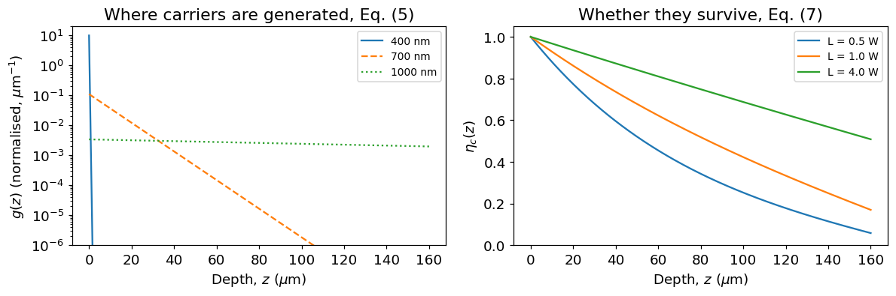
Put the two panels together and the whole technique follows: blue light generates carriers where \(\eta_c\) is high but the front losses are worst; red light generates them deep, where \(\eta_c\) has decayed.
5. External quantum efficiency¶
EQE is the fraction of incident photons that produce a collected electron. Weighting the generation profile (5) by the collection efficiency (7) and integrating over the cell thickness:
EQE is dimensionless and lies between 0 and 1. It is "external" because it is referenced to the photons arriving at the cell — reflection losses included, and therefore counted against the cell.
wl = np.linspace(300, 1200, 300)
eqe = eh.eqe_spectrum(wl, W_um=160.0, L_um=250.0, S_cm_s=100.0) # Eq. (9)
R = eh.arc_reflectance(wl)
fig, ax1 = plt.subplots(figsize=(7, 4.2))
ax1.plot(wl, eqe, color='C0', lw=2, label='EQE')
ax1.set_xlabel('Wavelength (nm)'); ax1.set_ylabel('EQE', color='C0')
ax1.set_ylim(0, 1.05); ax1.tick_params(axis='y', labelcolor='C0')
ax2 = ax1.twinx()
ax2.plot(wl, R, color='C1', ls='--', label='Reflectance $R$')
ax2.set_ylabel('Reflectance', color='C1')
ax2.set_ylim(0, 1.05); ax2.tick_params(axis='y', labelcolor='C1')
ax1.annotate('front-surface\nlosses', xy=(350, 0.25), fontsize=9, ha='center')
ax1.annotate('plateau:\nnear-ideal', xy=(600, 0.55), fontsize=9, ha='center')
ax1.annotate('weak absorption\n+ rear losses', xy=(1080, 0.25), fontsize=9, ha='center')
plt.title('EQE and reflectance of the modelled cell')
fig.tight_layout(); plt.show()
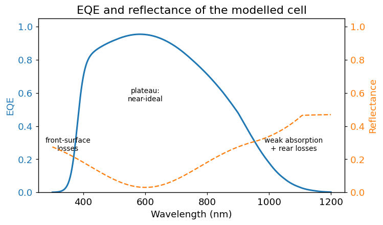
The three regions of every silicon EQE curve:
- UV / blue (300-450 nm): light is absorbed in the coating and emitter. Parasitic absorption and heavy front recombination make EQE low. This region reports on front surface quality.
- Plateau (450-900 nm): light enters easily (ARC minimum) and is absorbed in the base, where collection is efficient. EQE approaches its maximum. The gentle slope tracks the rise in \(R\).
- Near-IR (>950 nm): \(\alpha\) collapses, so light is absorbed deep, weakly, or not at all. This region reports on bulk lifetime and rear surface.
6. Internal quantum efficiency¶
EQE mixes two very different things: how much light gets into the cell (optics) and how well the carriers it makes are collected (electronics). A cell can have poor EQE simply because its coating reflects badly — with nothing wrong electrically.
IQE removes the optical loss. It counts collected electrons per photon that actually entered the cell:
This is the form used in practice, because \(R(\lambda)\) is measured with a spectrophotometer alongside the EQE. Accounting for parasitic absorption as well, using \(T_{\text{ext}}\) from (4), gives the more complete statement:
In words: EQE = (how much light gets in) × (how well it is converted). Since \(R \ge 0\), IQE is always \(\ge\) EQE, and an ideal absorber region would give \(\text{IQE} \to 1\) wherever the light is fully absorbed.
wl = np.linspace(300, 1200, 300)
# Same cell, two different anti-reflection coatings (an OPTICAL change only)
R_good = eh.arc_reflectance(wl) # good ARC
R_poor = eh.arc_reflectance(wl, R_min=0.18, R_uv=0.42) # poor ARC
eqe_good = eh.eqe_spectrum(wl, L_um=250, S_cm_s=100, reflectance=R_good)
eqe_poor = eh.eqe_spectrum(wl, L_um=250, S_cm_s=100, reflectance=R_poor)
iqe_good = eh.iqe_from_eqe(eqe_good, R_good) # Eq. (10)
iqe_poor = eh.iqe_from_eqe(eqe_poor, R_poor)
fig, axes = plt.subplots(1, 2, figsize=(11, 4), sharey=True)
axes[0].plot(wl, eqe_good, lw=2, label='good ARC')
axes[0].plot(wl, eqe_poor, lw=2, label='poor ARC')
axes[0].set_title('EQE — differs'); axes[0].set_ylabel('Efficiency')
axes[1].plot(wl, iqe_good, lw=2, label='good ARC')
axes[1].plot(wl, iqe_poor, lw=3, ls='--', label='poor ARC')
axes[1].set_title('IQE — identical')
for ax in axes:
ax.set_xlabel('Wavelength (nm)'); ax.set_ylim(0, 1.05); ax.legend(fontsize=9)
plt.tight_layout(); plt.show()
print(f"Jsc, good ARC : {eh.jsc_from_eqe(wl, eqe_good):.2f} mA/cm^2")
print(f"Jsc, poor ARC : {eh.jsc_from_eqe(wl, eqe_poor):.2f} mA/cm^2")
print("IQE curves agree:",
np.allclose(iqe_good[wl > 350], iqe_poor[wl > 350], equal_nan=True))
Jsc, good ARC : 27.43 mA/cm^2
Jsc, poor ARC : 23.48 mA/cm^2
IQE curves agree: True
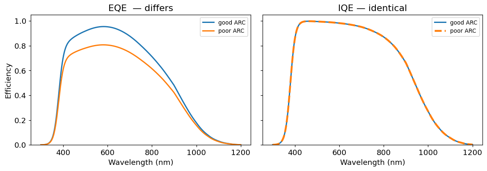
This is the whole point of IQE. Two cells, electrically identical, differing only in their coating: their EQE curves differ and their \(J_{sc}\) differs, but their IQE curves lie exactly on top of each other. So:
- EQE dropped and IQE dropped \(\rightarrow\) an electrical problem (lifetime, passivation, junction).
- EQE dropped but IQE unchanged \(\rightarrow\) an optical problem (coating, texture, shading).
EQE tells you how much current you get; IQE tells you why.
7. Spectral response¶
EQE is defined per photon, but an instrument measures current for a given optical power. That ratio is the spectral response \(SR\) (also called spectral responsivity), in amps per watt:
The two carry the same information; (13) is just (12) rearranged. The factor \(\lambda\) comes straight from (1): one watt of red light contains more photons than one watt of blue light, so the same EQE yields more current per watt at longer wavelength. This is why \(SR\) keeps rising across the plateau where EQE is flat, and why \(SR\) — not EQE — is the quantity a measurement actually produces (Section 10).
wl = np.linspace(300, 1200, 300)
eqe = eh.eqe_spectrum(wl, L_um=250, S_cm_s=100)
SR = eh.spectral_response_from_eqe(wl, eqe) # Eq. (12), A/W
# The ideal limit: EQE = 1 at every wavelength
SR_ideal = eh.spectral_response_from_eqe(wl, np.ones_like(wl))
fig, axes = plt.subplots(1, 2, figsize=(11, 4))
axes[0].plot(wl, eqe, lw=2, color='C0')
axes[0].set_ylabel('EQE'); axes[0].set_ylim(0, 1.05)
axes[0].set_title('EQE — per photon')
axes[1].plot(wl, SR, lw=2, color='C2', label='this cell')
axes[1].plot(wl, SR_ideal, ls=':', color='gray', label='ideal, EQE = 1')
axes[1].set_ylabel('Spectral response (A/W)')
axes[1].set_title('SR — per watt, Eq. (12)')
axes[1].legend(fontsize=9)
for ax in axes:
ax.set_xlabel('Wavelength (nm)')
plt.tight_layout(); plt.show()
# Eq. (13) recovers EQE exactly
print("Round trip SR -> EQE exact:",
np.allclose(eh.eqe_from_spectral_response(wl, SR), eqe))
Round trip SR -> EQE exact: True
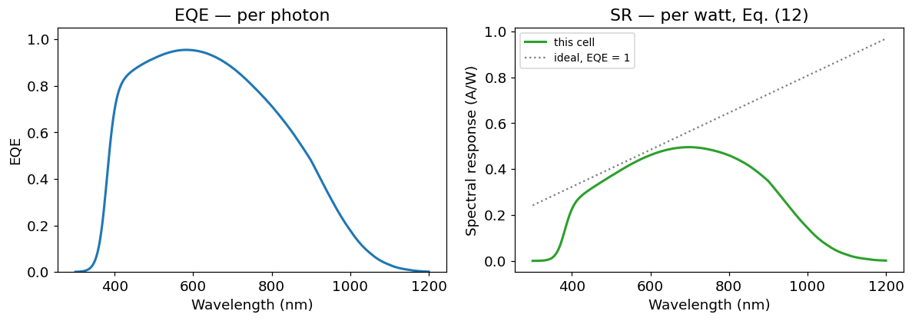
The dotted line is the physical ceiling: a perfect cell converting every photon still has an \(SR\) that rises linearly with \(\lambda\), purely because of (1). Comparing a measured \(SR\) against that ceiling is another way of reading EQE.
8. Short-circuit current from EQE¶
EQE also predicts a headline device parameter. Each wavelength contributes photons at a rate \(\Phi_0(\lambda)\) (the spectral photon flux of the illumination), of which a fraction EQE becomes collected charge:
Under standard test conditions, \(\Phi_0\) is the AM1.5G reference spectrum. Equation (14) is what makes EQE quantitative rather than merely diagnostic — and it is also the basis of the calibration in Section 11.
wl = np.linspace(300, 1200, 400)
eqe = eh.eqe_spectrum(wl, L_um=250, S_cm_s=100)
spectrum = eh.am15g_simplified(wl) # W/(m^2 nm)
phi0 = eh.photon_flux_spectral(wl, spectrum) # photons/(s m^2 nm)
contribution = eh.Q * phi0 * eqe * 1e-1 # mA/cm^2 per nm
fig, ax1 = plt.subplots(figsize=(7, 4.2))
ax1.fill_between(wl, contribution, alpha=0.35, color='C0',
label='collected (contributes to $J_{sc}$)')
ax1.plot(wl, eh.Q * phi0 * 1e-1, color='k', lw=1.2,
label='available in the spectrum')
ax1.set_xlabel('Wavelength (nm)')
ax1.set_ylabel('Current density per nm (mA cm$^{-2}$ nm$^{-1}$)')
ax1.legend(fontsize=9)
plt.title('Which wavelengths supply the current, Eq. (14)')
plt.tight_layout(); plt.show()
jsc = eh.jsc_from_eqe(wl, eqe) # Eq. (14)
print(f"Jsc over 300-1200 nm = {jsc:.2f} mA/cm^2")
Jsc over 300-1200 nm = 27.43 mA/cm^2
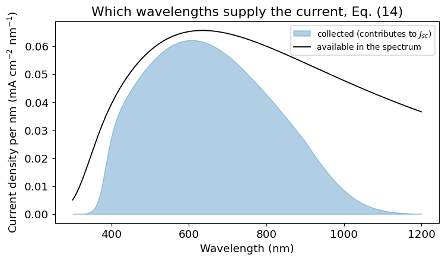
The gap between the two curves is the loss budget, resolved by wavelength — the area you would recover by fixing each loss mechanism.
9. Reading a real device: front vs rear¶
Because wavelength selects depth (Section 2), the two ends of the curve interrogate opposite faces of the cell:
| Region | Probes | Sensitive to |
|---|---|---|
| 300-500 nm | front surface, emitter | coating, front passivation, emitter doping |
| 500-900 nm | base (bulk) | overall optics, bulk quality |
| 900-1200 nm | deep base, rear surface | diffusion length \(L\), rear velocity \(S\), rear reflector |
A standard illustration is the aluminium back-surface-field (Al-BSF) cell versus the passivated emitter and rear cell (PERC). PERC adds a dielectric rear layer that both passivates the rear (lower \(S\)) and reflects weakly absorbed light back into the cell. The difference should appear only in the near-IR.
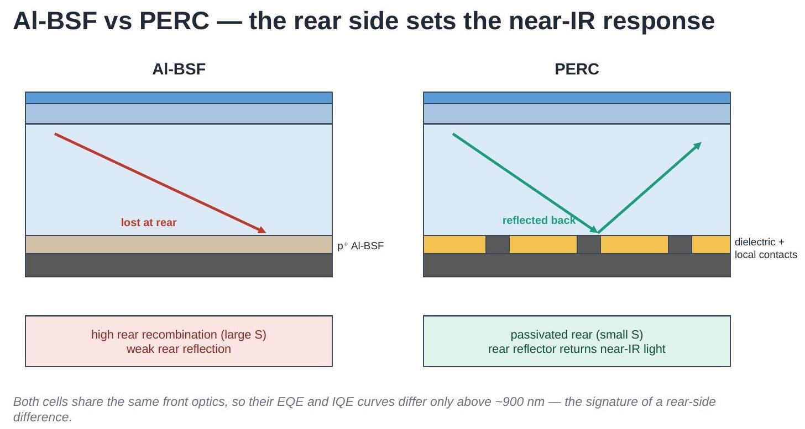
wl = np.linspace(300, 1200, 300)
# Al-BSF-like: shorter diffusion length, fast rear recombination
eqe_albsf = eh.eqe_spectrum(wl, W_um=160, L_um=150, S_cm_s=1000.0)
# PERC-like: longer diffusion length, well-passivated rear
eqe_perc = eh.eqe_spectrum(wl, W_um=160, L_um=250, S_cm_s=20.0)
R = eh.arc_reflectance(wl) # identical front optics
iqe_albsf = eh.iqe_from_eqe(eqe_albsf, R) # Eq. (10)
iqe_perc = eh.iqe_from_eqe(eqe_perc, R)
fig, axes = plt.subplots(1, 2, figsize=(11, 4), sharey=True)
axes[0].plot(wl, eqe_albsf, lw=2, label='Al-BSF-like')
axes[0].plot(wl, eqe_perc, lw=2, label='PERC-like')
axes[0].set_title('EQE'); axes[0].set_ylabel('Efficiency')
axes[1].plot(wl, iqe_albsf, lw=2, label='Al-BSF-like')
axes[1].plot(wl, iqe_perc, lw=2, label='PERC-like')
axes[1].set_title('IQE — gap is electrical')
for ax in axes:
ax.axvspan(900, 1200, color='0.9', zorder=0)
ax.set_xlabel('Wavelength (nm)'); ax.set_ylim(0, 1.05); ax.legend(fontsize=9)
plt.tight_layout(); plt.show()
print(f"Jsc Al-BSF-like : {eh.jsc_from_eqe(wl, eqe_albsf):.2f} mA/cm^2")
print(f"Jsc PERC-like : {eh.jsc_from_eqe(wl, eqe_perc):.2f} mA/cm^2")
Jsc Al-BSF-like : 26.37 mA/cm^2
Jsc PERC-like : 28.37 mA/cm^2
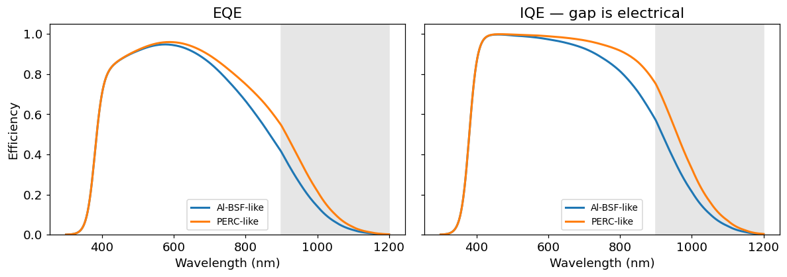
The curves are indistinguishable below about 700 nm and separate progressively across the shaded near-IR band — exactly the signature of a rear-side difference. Because both cells here share the same front optics, IQE separates by the same amount as EQE, confirming the cause is electrical rather than optical.
10. Measuring: spectral response and the DSR method¶
EQE cannot be measured directly. What an instrument measures is current per unit optical power, i.e. \(SR\) from Section 7, which is then converted to EQE with (13).
One further complication: a solar cell's response can depend on how strongly it is already illuminated, because recombination is injection-dependent. Measuring a dark cell with a dim monochromatic beam would not describe the cell at operating conditions. The standard solution is a differential measurement:
- Hold the cell under steady white bias light, setting a realistic injection level.
- Add a small, chopped monochromatic beam of wavelength \(\lambda\).
- Recover the resulting small AC current with a lock-in amplifier.
The measured quantity is the differential spectral responsivity:
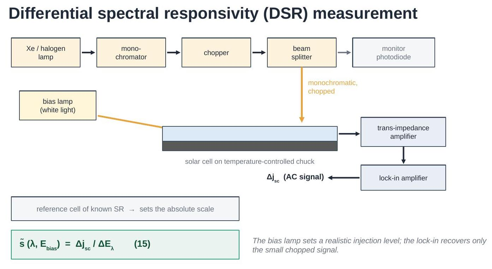
The absolute scale of \(\Delta E_\lambda\) is not known from the instrument alone, so a reference cell of known responsivity is measured under the same conditions and the unknown gain factors divide out — but only up to one constant, which Section 11 fixes.
wl = np.linspace(300, 1200, 150)
eqe_true = eh.eqe_spectrum(wl, W_um=160, L_um=250, S_cm_s=100.0)
# A realistic measurement: noise, plus an unknown overall calibration
# scale factor left over from the reference-cell comparison, Eq. (15)
s_measured = eh.synthetic_dsr_measurement(
wl, eqe_true, noise_level=0.015, calibration_scale=1.08, random_state=1)
eqe_relative = eh.eqe_from_spectral_response(wl, s_measured) # Eq. (13)
fig, axes = plt.subplots(1, 2, figsize=(11, 4))
axes[0].plot(wl, s_measured, '.', ms=3, color='C2')
axes[0].set_ylabel('Measured $\\tilde{s}$ (A/W)')
axes[0].set_title('What the instrument records, Eq. (15)')
axes[1].plot(wl, eqe_true, lw=2, label='true EQE')
axes[1].plot(wl, eqe_relative, '.', ms=3, alpha=0.7, label='relative EQE')
axes[1].set_ylabel('EQE'); axes[1].set_ylim(0, 1.2)
axes[1].set_title('After converting with Eq. (13)')
axes[1].legend(fontsize=9)
for ax in axes:
ax.set_xlabel('Wavelength (nm)')
plt.tight_layout(); plt.show()
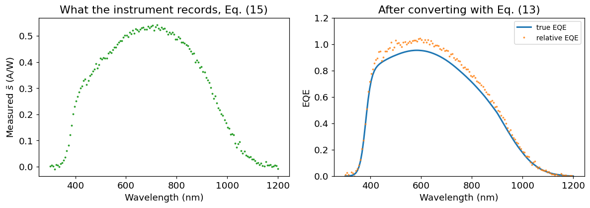
11. From relative to absolute EQE¶
The converted curve has the right shape but the wrong scale — note that it exceeds 1, which is unphysical. The remaining unknown constant is removed by requiring that the EQE reproduce an independently measured short-circuit current, via (14):
where \(J_{sc,\text{exp}}\) comes from a solar simulator measurement and \(J_{sc,\text{calc}}\) from integrating the relative EQE against the reference spectrum. A well-calibrated setup gives \(f_{sc}\) close to 1 — the synthetic data below carries a deliberate 8% miscalibration, which (16) removes. A value far from 1 signals a measurement problem rather than a property of the cell.
jsc_calc = eh.jsc_from_eqe(wl, eqe_relative) # Eq. (14)
# Independent solar-simulator measurement of the same cell
jsc_exp = eh.jsc_from_eqe(wl, eqe_true)
f_sc = jsc_exp / jsc_calc # Eq. (16)
eqe_absolute = f_sc * eqe_relative
plt.figure(figsize=(6.8, 4.2))
plt.plot(wl, eqe_true, lw=2, color='k', label='true EQE')
plt.plot(wl, eqe_relative, '.', ms=3, alpha=0.6,
label=f'relative ($J_{{sc}}$ = {jsc_calc:.1f} mA/cm$^2$)')
plt.plot(wl, eqe_absolute, '.', ms=3, alpha=0.8,
label=f'absolute (scaled by $f_{{sc}}$ = {f_sc:.3f})')
plt.axhline(1.0, ls=':', color='gray', lw=1)
plt.xlabel('Wavelength (nm)'); plt.ylabel('EQE'); plt.ylim(0, 1.2)
plt.legend(fontsize=9); plt.title('Scaling to absolute EQE, Eq. (16)')
plt.tight_layout(); plt.show()
print(f"Jsc measured = {jsc_exp:.2f} mA/cm^2")
print(f"Jsc calculated = {jsc_calc:.2f} mA/cm^2")
print(f"scaling factor = {f_sc:.3f}")
Jsc measured = 27.43 mA/cm^2
Jsc calculated = 29.57 mA/cm^2
scaling factor = 0.928
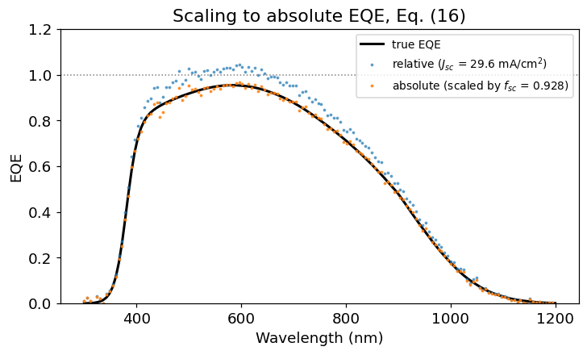
12. Linearity and bias-ramp measurements¶
If a cell is perfectly linear, its differential response \(\tilde{s}\) does not depend on the bias level, and a single measurement suffices. Real cells can deviate. The rigorous definition integrates \(\tilde{s}\) over bias irradiance up to one sun:
Measuring that full integral at every wavelength is slow, so simplified procedures use a single bias point (commonly around \(300\ \text{W/m}^2\)), which approximates (17) well for typical silicon cells. A bias ramp — sweeping \(E_{\text{bias}}\) at a fixed wavelength — is how you check whether that shortcut is valid for a given device.
E_bias = np.linspace(1, 1000, 200) # W/m^2
s_stc = 0.42 # A/W at the chosen wavelength
s_linear = eh.bias_ramp_dsr(E_bias, s_stc, nonlinearity=0.0)
s_nonlin = eh.bias_ramp_dsr(E_bias, s_stc, nonlinearity=0.15)
plt.figure(figsize=(6.8, 4.2))
plt.plot(E_bias, s_linear, lw=2, label='linear cell')
plt.plot(E_bias, s_nonlin, lw=2, label='nonlinear cell')
plt.axvline(300, ls='--', color='gray', label='single-point simplification')
plt.axvline(1000, ls=':', color='k', label='one sun (STC)')
plt.xlabel(r'Bias irradiance, $E_{bias}$ (W/m$^2$)')
plt.ylabel(r'$\tilde{s}$ (A/W)')
plt.legend(fontsize=9); plt.title('Bias ramp at a fixed wavelength, Eq. (17)')
plt.tight_layout(); plt.show()
dev = 100 * (s_nonlin[np.argmin(abs(E_bias - 300))] / s_nonlin[-1] - 1)
print(f"Nonlinear cell: measuring at 300 W/m^2 instead of 1000 W/m^2 "
f"misestimates SR by {dev:+.1f}%")
Nonlinear cell: measuring at 300 W/m^2 instead of 1000 W/m^2 misestimates SR by -4.3%
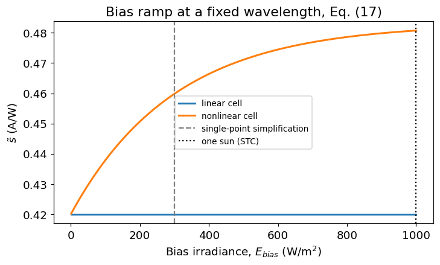
A flat line means the shortcut is safe. A sloping line means the single-point measurement carries a systematic error, which must either be corrected or reported.
13. Assumptions and limitations¶
The models here are deliberately simple. They assume:
- one-dimensional transport — no lateral current flow or finger shading effects;
- uniform material — constant \(D\), \(L\) and doping with depth, so the emitter is represented only by an empirical front-loss term;
- an analytic reflectance shape, not a thin-film interference calculation, and no explicit light-trapping / multiple-pass optics;
- a coarse \(\alpha(\lambda)\) interpolation and an approximate AM1.5G spectrum, adequate for shapes and trends but not for certification;
- no series resistance or injection-dependent recombination beyond the illustrative bias-ramp model of (17).
They are sufficient to explain and interpret the shape of an EQE curve, which is the purpose here. Quantitative device work needs tabulated optical constants, the standard reference spectrum, and a numerical device simulator.
Summary of equations¶
| # | Equation | Meaning |
|---|---|---|
| (1) | \(E_{\text{phot}} = hc/\lambda\) | photon energy |
| (2) | \(\Phi = \Phi_0 e^{-\alpha z}\) | Lambert-Beer absorption |
| (3) | \(L_\alpha = 1/\alpha\) | absorption length |
| (4) | \(T_{\text{ext}} = 1 - R - A_{\text{ext}}\) | light that reaches the absorber |
| (5) | \(g = (1-R)\Phi_0\alpha e^{-\alpha z}\) | generation rate |
| (6) | \(L = \sqrt{D\tau}\) | diffusion length |
| (7) | \(\eta_c = \cosh(z/L) - (L/L_{\text{eff}})\sinh(z/L)\) | collection efficiency |
| (8) | \(L_{\text{eff}} = L\,\frac{S\sinh + D\cosh}{S\cosh + D\sinh}\) | effective diffusion length |
| (9) | \(\text{EQE} = \frac{1}{\Phi_0}\int_0^W g\,\eta_c\,dz\) | external quantum efficiency |
| (10) | \(\text{IQE} = \text{EQE}/(1-R)\) | internal quantum efficiency |
| (11) | \(\text{EQE} = T_{\text{ext}}\cdot\text{IQE}\) | optics × electronics |
| (12) | \(SR = \text{EQE}\;q\lambda/hc\) | spectral response |
| (13) | \(\text{EQE} = SR\;hc/q\lambda\) | conversion back to EQE |
| (14) | \(J_{sc} = q\int \Phi_0\,\text{EQE}\,d\lambda\) | short-circuit current |
| (15) | \(\tilde{s} = \Delta j_{sc}/\Delta E_\lambda\) | differential spectral responsivity |
| (16) | \(f_{sc} = J_{sc,\text{exp}}/J_{sc,\text{calc}}\) | absolute scaling factor |
| (17) | \(s_{\text{STC}} = \int_0^{1000} \tilde{s}\,dE_{\text{bias}}\) | responsivity at STC |